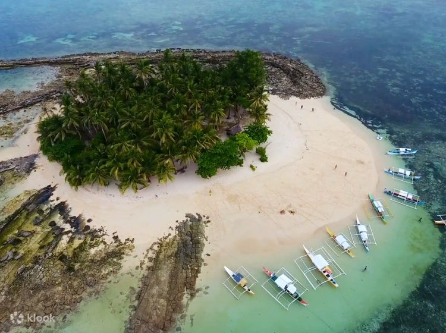

HOME
BOHOL
PALAWAN

|
Siargao is a tear-drop shaped island
in the Philippine Sea, a tropical adventure's dream destination, as it is surrounded by emerald
green waters, is covered in coconut palm trees, and has some of the Philippines 'most exquisite beach resorts'.